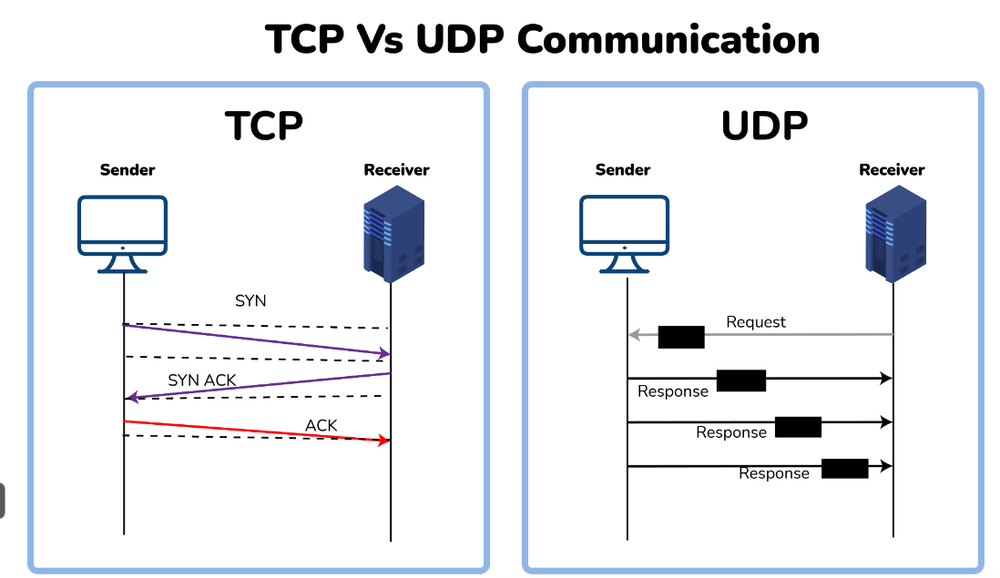

A network is a collection of computers and devices interconnected by communication channels that allow sharing of resources and information.
The OSI (Open Systems Interconnection) Model is a framework that standardizes the functions of a telecommunication or computing system into seven abstract layers:
A router is a networking device that forwards data packets between computer networks. It directs traffic on the Internet by determining the best path for data transmission.
The DNS (Domain Name System) translates domain names into IP addresses, allowing users to access websites using human-readable names instead of numerical IP addresses.
Bandwidth is the maximum rate of data transfer across a network path. It is typically measured in bits per second (bps) and determines the amount of data that can be transmitted in a given time period.
A subnet mask is a 32-bit address that divides an IP address into network and host portions. It helps identify which part of the IP address refers to the network and which part refers to the individual device.
| MAC Address | IP Address |
|---|---|
| Media Access Control Address | Internet Protocol Address |
| 6 or 8-byte hexadecimal number | 4 (IPv4) or 16 (IPv6) Byte address |
| It is embedded with NIC | It is obtained from the network |
| Physical Address | Logical Address |
| Operates at Data Link Layer | Operates at Network Layer. |
| Helps to identify the device | Helps to identify the device connectivity on the network. |
The transport layer performs the following main functions:
TCP (Transmission Control Protocol) is a connection-oriented protocol. It ensures that data is delivered accurately and in the correct order. It establishes a connection before transmitting data and guarantees that all data packets are received correctly.
UDP (User Datagram Protocol) is a connectionless protocol. It does not guarantee the delivery of packets, making it faster but less reliable than TCP. UDP is used in applications where speed is crucial and occasional data loss is acceptable, such as video streaming or online gaming.
The HTTP (Hypertext Transfer Protocol) protocol is a protocol used for transferring hypertext requests and information on the web. When a user requests a webpage, the browser sends an HTTP request to the server, which then responds with the requested data. The communication between the client and server occurs over a connection that can be established using TCP. HTTP operates on port 80 by default.
An IP address serves two main functions:
NAT is a method used to translate private IP addresses to a public IP address and vice versa. It enables multiple devices on a local network to share a single public IP address when accessing the Internet. NAT provides an additional layer of security by hiding internal IP addresses from external networks.
A subnet is a logical subdivision of an IP network. Subnetting allows an organization to create smaller, manageable networks within a larger network. It improves network performance and security by reducing broadcast traffic and isolating network segments. Subnets are defined by their subnet mask, which determines the network and host portions of an IP address.
A firewall is a security device that monitors and controls incoming and outgoing network traffic based on predetermined security rules. It acts as a barrier between trusted and untrusted networks.
Types of firewalls include:
Symmetric encryption uses the same key for both encryption and decryption, making it fast and efficient. However, key distribution can be a challenge.
Asymmetric encryption uses a pair of keys: a public key for encryption and a private key for decryption. This method is more secure for key exchange but slower than symmetric encryption.
| MAC Address | IP Address |
|---|---|
| Media Access Control Address | Internet Protocol Address |
| 6 or 8-byte hexadecimal number | 4 (IPv4) or 16 (IPv6) Byte address |
| It is embedded with NIC | It is obtained from the network |
| Physical Address | Logical Address |
| Operates at Data Link Layer | Operates at Network Layer. |
| Helps to identify the device | Helps to identify the device connectivity on the network. |
FTP is a File Transfer Protocol. It is an application layer protocol used to transfer files and data reliably and efficiently between hosts. It can also be used to download files from remote servers to your computer. It uses port 27 by default.